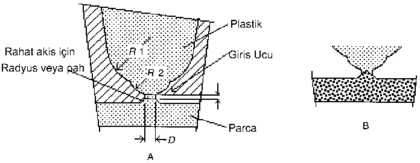
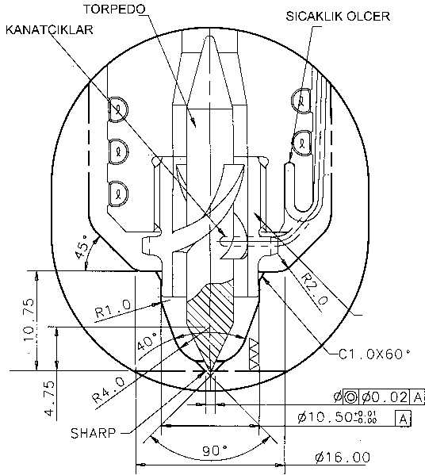
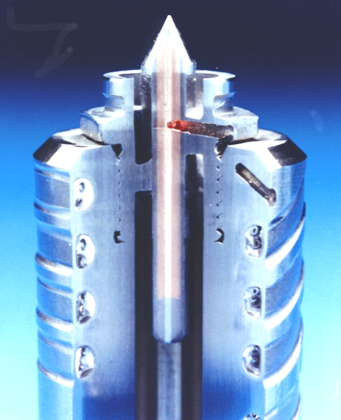

|
Dr. Mustafa Gevrek
MMG Müþavirlik, Mühendislik San. ve Tic. Ltd. Þti.
Kasým 2005, Ýstanbul
Not: Orijinal olarak TurkCADCAM.net
Dergisi 2. Sayýsý için hazýrlanmýþ bu
makale, Ocak 2008'de TurkCADCAM.net Portalý'ndan
yayýna baþlamýþtýr.
Plastik enjeksiyon kalýplarýndaki sýcak yolluk uygulamalarýnýn baþarýsý bir çok faktöre baðlýdýr. Uygun polimerin seçimi ile beraber iyi bir parça ve kalýp tasarýmýnýn yapýlmasý ve doðru enjeksiyon makinesinin seçimi kritik faktörlerdir. Bunlarýn yanýnda parça üzerindeki yolluk giriþinin konumu ve yolluk giriþ tipinin seçimi enjeksiyondan baþarýlý neticeler alabilmek için çok daha önemlidir.
Plastik parça tasarýmý sýrasýnda, yolluk giriþinin konumuna karar verilirken parçanýn dengeli doldurulabilmesi ve yolluk giriþinin oluþturduðu anizotropi dikkate alýnmalýdýr. Bilindiði gibi malzeme akýþ yönünde polimerde oluþan molekül zincirleri akýþ yönündeki mukavemeti artýrýrken, akýþ yönüne dik yönde daha düþük bir mukavemet yaratmakta, ayrýca her iki yöndeki çekme oranlarý da farklý olmaktadýr. Yolluk giriþ konumuna karar verdikten sonra çeþitli sýcak yolluk giriþ metotlarý arasýndan doðru bir seçim yapmak gerekir. Çeþitli metotlarýnýn seçilen uygulamaya göre ayrý ayrý avantaj ve dezavantajlarý vardýr.
1- Yolluk giriþ ucu tipleri
Sýcak yolluk sistemlerinde kullanýlan meme uçlarý veya yolluk giriþ uçlarý aþaðýda tanýmlanan dört ana grupta toplanabilir.
- Daire kesitli açýk giriþ ucu (Sprue Gate),
- Halka kesitli açýk giriþ ucu (Hot tip),
- Kenar giriþ ucu (Edge Gate),
- Açma/Kapamalý giriþ ucu (Valve Gate),
Daire Kesitli Açýk Giriþ Uçlarý - Sprue Gate
Bu uç tipinde basýnç altýndaki plastiðin rahat akýþý için giriþ kesiti açýktýr. Enjeksiyon çevriminin sonunda giriþteki dar kesitte donan plastik bir tapa vazifesi görerek giriþi týkamakta ve kalýbýn diþi yüzeyine malzemenin akmasý (damlamasý) önlenmiþ olmaktadýr. Kalýp açýlýrken yolluk giriþ ucundaki dar kesitte donmuþ olan plastik kopmakta ve parça üzerinde bir artýk býrakmaktadýr. Bu artýðýn büyüklüðü ve þekli yolluk giriþ ucunun çapýna ve geometrisine baðlý olduðu kadar enjeksiyon çalýþma þartlarýna (sýcaklýklar, basýnçlar ve zaman) da baðlýdýr. Bir sonraki baskýda enjeksiyon basýncý giriþ ucundaki donmuþ plastik tapayý kalýbýn içine itmekte ve giriþ ucu tekrar açýlmaktadýr. Bu plastik tapa baský sýrasýnda eriyerek kalýbý dolduran plastik ile karýþmaktadýr.
Burada dikkat edilmesi gereken plastik tapa yüksekliðinin diðer bir deyiþ ile kalýpta açýlan yolluk giriþ ucu yüksekliðinin parça et kalýnlýðýndan daha düþük olmasý gerektiðidir. Parça yüzeyinde çok küçük bir artýk istendiðinde yolluk giriþ ucu yüksekliðinin ortada daralacak þekilde çift taraflý konik yapýlmasý ile kopmanýn en dar kesitte (giriþ ucu yüksekliðinin ortasýnda) olmasýný saðlayacaðýndan hem týkanma riski ortadan kaldýracak hem de parça yüzeyinde küçük bir artýk kalacaktýr. Þekil -1 A da giriþ ucu kanalýndaki yüksekliðe her iki yönden koniklik verilmiþ ideal bir giriþ ucu kesiti gösterilmektedir. Bu geometrinin kalýba iþlenmesi daha zor olmasýna raðmen, plastiðin kopma noktasý bu formdaki bir uç geometrisi ile çok iyi tanýmlanmaktadýr. Bu yolluk giriþ tipinde yolluk giriþ kanalýnýn yüksekliði genellikle 0. 10-0. 15 mm arasýnda seçilmektedir. Bu tasarým ayný zamanda düz silindirik giriþe göre daha mukavemetli bir tasarýmdýr. Þekil -1 B de gösterildiði gibi bu geometrideki bir giriþ kanalýnda donmuþ plastik kalýp açýlýrken parça yüzeyinde çok küçük bir artýk býrakmaktadýr.

Þekil-1: Silindirik Yolluk Giriþi. A-Enjeksiyon sýrasýnda, B-Plastik donduktan sonra.
Halka Kesitli Açýk Giriþ Uçlarý - Hot Tip
Giriþ kesiti halka formunda olan uçlar, ekseninde plastik malzemenin donmasýný önlemek için torpil formunda (torpedo) sýcak bir silindirik parçanýn yerleþtirildiði açýk uçlu yolluk giriþleridir. Yolluk memesi içindeki sýcak malzeme ile ýsýtýlan ve parçanýn dýþ yüzeyine kadar uzanan torpedo, düþük sýcaklýktaki kalýbýn soðuttuðu giriþ ucuna plastik malzemenin sýcaklýðýný taþýyarak giriþ ucundaki malzemenin enjeksiyon sýrasýndaki donma riskini ortadan kaldýrýlmaktadýr. Torpedonun etrafýnda daima sýcak bir plastik tabakasý oluþmakta, soðuk kalýp çeliði ile temasta olan plastik malzeme ise eksendeki plastik malzeme için bir izolasyon tabakasý oluþturmaktadýr. Plastik malzeme yolluk giriþ ucundaki sýcak torpedonun etrafýndan boru þeklinde akarak kalýp gözüne girmektedir. Sýcak torpedo ucunun çevresinden plastik malzemenin yüksek hýzlardaki akýþý, özellikle katkýlý plastikler kullanýldýðýnda torpedo ucunu zaman içinde aþýndýrmakta ve deðiþtirilmesini gerektirmektedir.
Genellikle bir çok sýcak yolluk üreticisi tarafýndan yüksek ýsý iletimi özelliðinden dolayý torpedo malzemesi olarak BeCu tercih edilmektedir. Ancak son zamanlarda BeCu malzemenin aþýnma mukavemeti yeterli bulunmadýðýndan toz metalürjisi ile imal edilen ýsý iletim katsayýsý yüksek özel Tungsten karbür alaþýmlarý kullanmaktadýrlar.
Bu yolluk ucu tipinin avantajlarý aþaðýda verilmiþtir;
1- Yolluk ucunda donma olasýlýðý çok azdýr. Torpedonun çevresinde daima ince bir tabakada sýcak viskoz plastik bulunduðundan, giriþ ucunda donmuþ olan dýþ plastik halka bir sonraki baskýda kolaylýkla eritilmektedir.
2- Yolluk ucunda iplikleþme diðer uç tiplerine göre çok daha az oluþur. Bu tip uçlar özellikle sýcaklýða hassas olmayan, kolay iplikleþme gösteren plastik malzemelerde ve kýsa çevrim süreleri için çok yüksek doldurma hýzlarý kullanýlan kalýplarda (þiþe kapaðý kalýplarý gibi) kullanýlýr.
3- Silindirik uçlara göre parça üzerinde çok daha küçük yolluk artýðý kalmaktadýr.
4- Yolluk giriþ ucunda sýcaklýk daha iyi kontrol edilebildiðinden enjeksiyonda daha geniþ bir çalýþma penceresi elde edilmektedir.
Bu avantajlara karþýlýk þu dezavantajlar da sayýlabilir;
1- Yolluk kanalý içine yerleþtirilen torpedo malzeme akýþýnda bir süreksizlik yarattýðýndan, torpedonun boyu yeterli deðil ise parça üzerinde istenmeyen akýþ izleri meydana gelebilir.
2- Küçük kesitli uçtaki akýþ direncini yenmek için yüksek basýnçlar gerektiðinden, bu uç tipi bütün polimerlere uygun deðildir.
3- Bu uç tipi hiç bir zaman kirli malzeme kullanýlmasýna izin vermez.
4- Torpedonun formu ve uç içindeki baðlantýsý iyi tasarýmlandýrýlmamýþ ise, bu yüzeylerde uzun süre takýlý kalan malzeme degrade olup basýlan malzemeye karýþarak parça kalitesini düþürür.
Þekil-2'de Mold Masters firmasýnýn geliþtirdiði torpedo tasarýmýnýn kalýp içindeki yerleþimi ve yolluk memesine monte edilmiþ torpedonun kesit fotoðrafý gösterilmektedir. Isý iletimi yüksek bir "Tungsten Karbür" alaþýmýndan toz metal enjeksiyonu ile imal edilmiþ olan torpedo, uç kýsmýnda çapý büyütülen yolluk memesi kanalýnýn içine vidalanmaktadýr. Bu sayede aþýnma mukavemeti çok yüksek olan Tungsten Karbür torpedonun uç kýsmýnda uzun çalýþma süreleri sonunda bir aþýnma söz konusu olursa deðiþtirme imkaný bulunmaktadýr. Torpedo yolluk ucuna, malzeme akýþýnda süreksizlik yaratmayacak bir form verilmiþ kanatçýklar yardýmý ile baðlanmýþtýr. Torpedonun ucu yolluk giriþ ucunun ekseninde bulunmaktadýr. Yolluk giriþ ucunun dýþ çapý, enjeksiyonu yapýlan parçanýn aðýrlýðýna ve et kalýnlýðýna göre 0.6-3.0mm arasýnda seçilerek kalýpçý tarafýndan kalýba iþlenilmektedir.

Þekil-2 A Kalýp montaj detayý

Þekil-2 B Sýcak yolluk memesi ucuna vidalanmýþ torpedo ucun kesit fotoðrafý
Þekil-2: Mold Masters firmasýnýn torpedo tasarýmý.
|